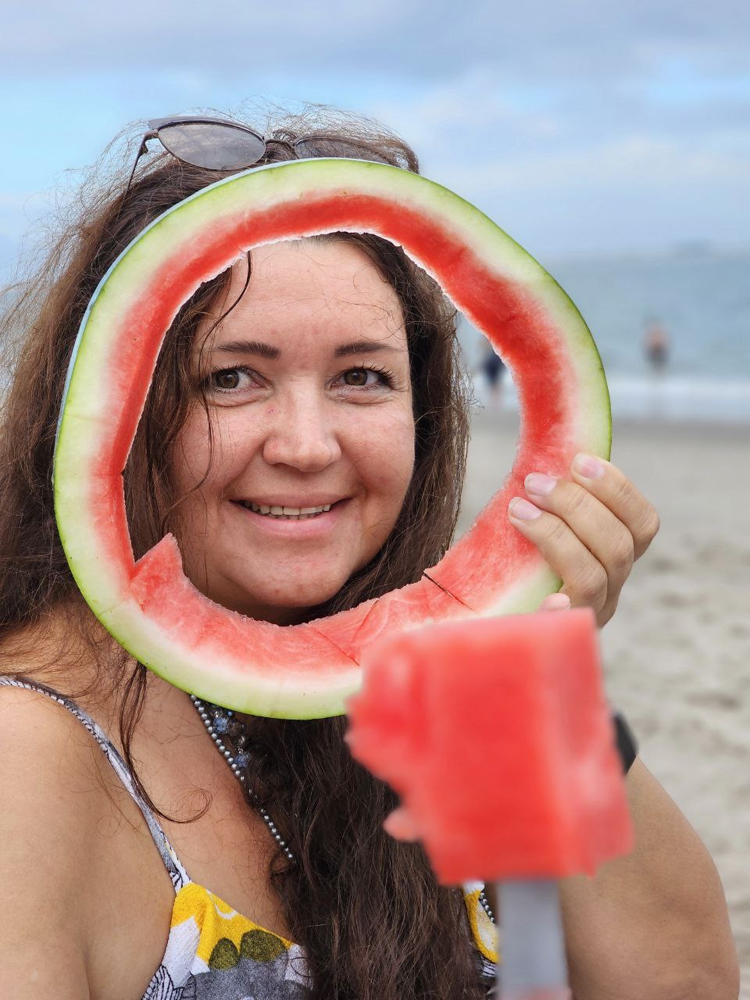

About Me
Hi, my name is Nattalia Senchenya. I am a New York–based artist with over 30 years of professional experience across multiple art disciplines.
Art has been the central thread of my life — not just something I create, but a way of seeing, feeling, and understanding the world. My artistic journey began in Belarus, where I graduated from the Professional College of Decorative and Applied Arts in Babruysk.
From early on, life gave me the opportunity to do what I love most: work with people through art. I taught children in schools, worked as a professional art teacher, and specialized in traditional Slavic cultural arts. I also collaborated with multiple organizations as an artist and designer, creating meaningful, hands-on art experiences.
After moving to the United States, my path naturally expanded to working with adults and elderly people. It has been deeply inspiring to witness how art can transform lives — bringing fresh energy, emotional release, and a renewed sense of purpose to those who have already lived rich and complex lives.
Through decades of practice and teaching, I’ve come to one powerful realization: "Art is not something you simply observe — it is something you experience".
This is what I am most passionate about sharing. Art opens new rooms in the mind, reveals unseen sides of ourselves, and invites joy, curiosity, and presence. No matter your age or background, art has the power to shift how you feel and how you see the world.
My work blends creativity, teaching, and community. I have extensive experience guiding people of all ages into art in a way that feels welcoming, intuitive, and deeply personal.
If you are ready to explore creativity, open new sides of yourself, and experience art in a meaningful, hands-on way, I would be honored to create that space with you.
